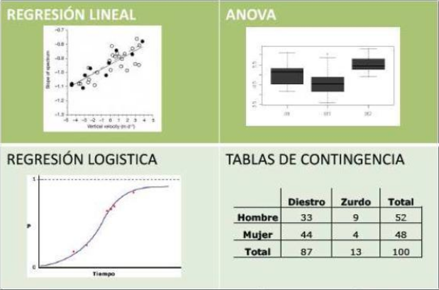
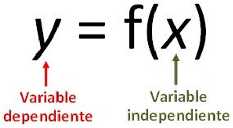
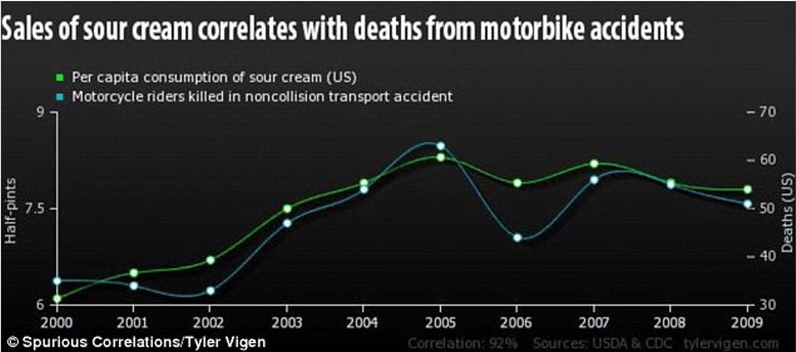
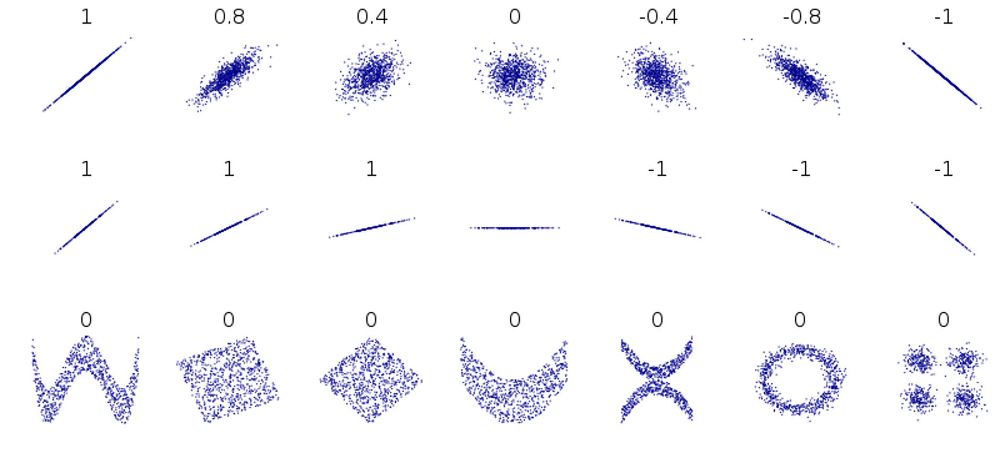
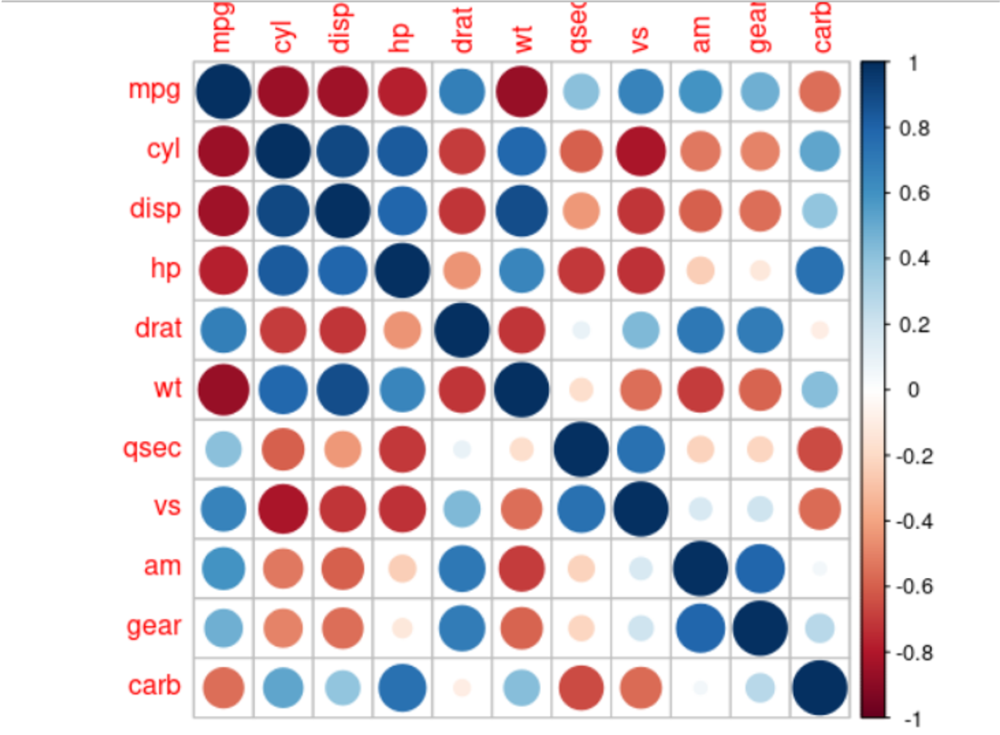
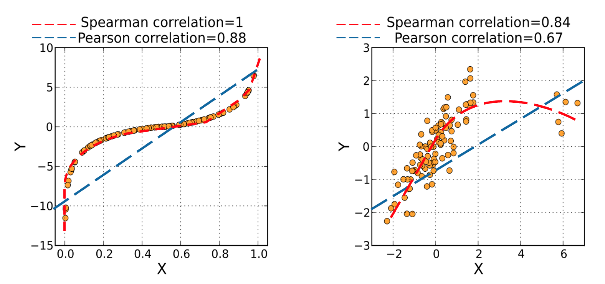

cor(x, y)
# cor(x, y, method='pearson')5 Correlaciones
5.1 Correlaciones
La correlación entre dos variables se refiere a cualquier tipo de relación y/o dependencia entre las variables dadas.
Tipos de regresiones de acuerdo a los diferentes tipos de variables, como se ilustra en la siguiente figura:


La existencia de una correlación entre dos variables no implica la causalidad entre ellas.

La correlación entre dos variables se refiere a cualquier tipo de relación y/o dependencia entre las variables dadas.
La existencia de una correlación entre dos variables no implica la causalidad entre ellas.
Existen varios tipos de coeficientes de correlación.
- Pearson
- Spearman
- Kendall
5.1.1 Coeficiente de Correlación de Pearson
En estadística, el coeficiente de correlación de Pearson es una medida de dependencia lineal entre dos variables aleatorias cuantitativas. A diferencia de la covarianza, la correlación de Pearson es independiente de la escala de medida de las variables. De manera menos formal, podemos definir el coeficiente de correlación de Pearson como un índice que puede utilizarse para medir el grado de relación de dos variables siempre y cuando ambas sean cuantitativas y continuas. 1
Uso general: Correlaciones Lineales
Valor que varía entre -1 y 1, que mide la relación lineal entre las variables numéricas X e Y.
p(X,Y)=cor(X, Y)=\frac{cov(X, Y)}{\sigma_X\sigma_Y}
Asume:
- Cada observación tiene un par [(X1,Y1), (X2,Y2), …]
- Cada variable es continua
- Cada variable está normalmente distribuida
- No hay outliars
- Asume linealidad y homocedasticidad (varianza se distribuye uniformemente en el modelo, o entre variables)
En R:

Los resultados se representan como una matriz de correlación, inclusive se puede representar gráficamente con la función corrplot() de la librería del mismo nombre.

5.1.2 Coeficiente de Correlación de Speraman
En estadística, el coeficiente de correlación de Spearman, ρ (ro) es una medida de la correlación (la asociación o interdependencia) entre dos variables aleatorias (tanto continuas como discretas). Para calcular ρ, los datos son ordenados y reemplazados por su respectivo orden. 2
Uso General: Correalaciones no Lineales
Test no paramétrico, que varía entre -1 y 1, y que mide la relación monotónica entre las variables numéricas y/u ordinales X e Y.
Relación monotónica o monótona: las variables tienden a cambiar al mismo tiempo, pero no necesariamente a un ritmo constante.
El test mide si cuando un valor incrementa, el otro valor también crece o disminuye, independiente de si este es lineal o no. Para ello, se analiza el ranking de cada valor, en vez de su valor.
p_S(X,Y)=\frac{cov(rg_X, rg_Y)}{\sigma_{rg_X} \sigma_{rg_Y}}
Asume:
- Observaciones son independientes
- Variables en escala ordinal, intervalos, o razón
- Asume una relación monotónica

Si Spearman > Pearson, relación es monotónica, pero no lineal
En R:
cor(x, y, method='spearman')5.1.3 Coeficiente de Correlación de Kendall
En estadística, el coeficiente de correlación de rango de Kendall, comúnmente conocido como coeficiente \tau de Kendall (con la letra griega \tau, tau), es una estadística utilizada para medir la asociación ordinal entre dos cantidades medidas. Una prueba \tau es una prueba de hipótesis no paramétrica para la dependencia estadística basada en el coeficiente \tau.3
El coeficiente \tau de Kendall se define como:
\tau(X,Y)=\frac{pares\ concordantes-pares\ discordantes}{{n \choose 2}}
Donde {n \choose 2}=\frac{n(n-1)}{2} es el coeficiente binomial para la cantidad de formas de elegir dos elementos de n elementos.
Uso general: Robusto con pocas observaciones, es más conservador, su interpretación es cercano a una probabilidad
Test no paramétrico, que varía entre -1 y 1, y que mide la relación entre las variables numéricas y/o ordinales X e Y.
Asume:Spearman
Spearman vs Kendall:
- Similares, pero Kendall es más robusto con pocas observaciones.
- Se dice que el valor de Kendall es usualmente más bajo que Spearman, pero cercano a una interpretación de probabilidad.
En R:
cor(x, y, method='kendall')5.1.4 ¿Qué coeficiente de correlación usar?
Las correlaciones no paramétricas son menos potentes porque utilizan menos información en sus cálculos. Pearson utiliza información sobre la media y la desviación de la media, mientras que las correlaciones no paramétricas sólo utilizan la información ordinal y las puntuaciones de los pares.
En correlaciones no paramétricas es posible que X e Y sean continuos u ordinales, y no se requieren distribuciones normales. En Pearson, se supone que las distribuciones de X e Y deben ser una distribución normal y también continua.
Decisión:
- ¿Qué tipo de datos tengo?
- ¿Asumo linealidad?
- ¿Asumo normalidad?